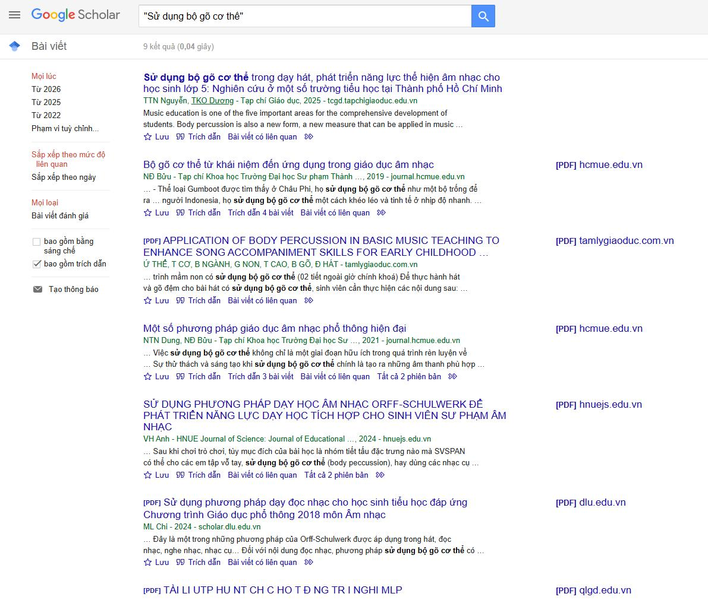
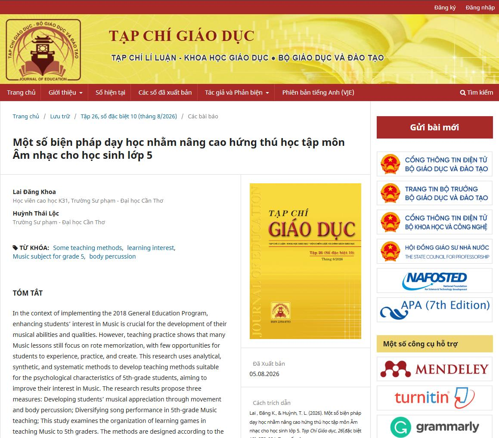
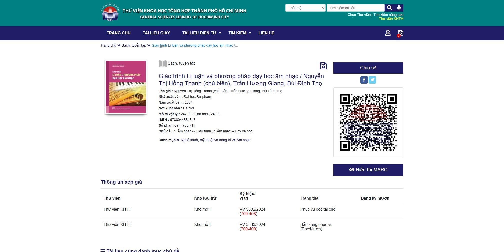
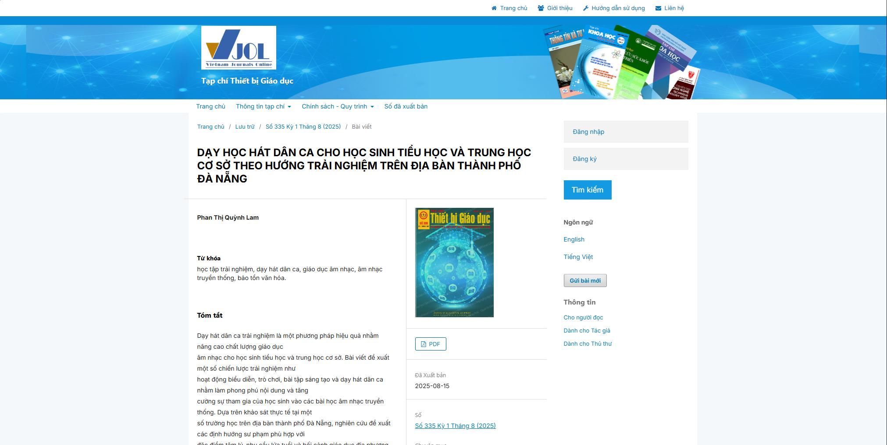

BÀI TẬP 2 – BÁO CÁO TÌM KIẾM VÀ ĐÁNH GIÁ THÔNG TIN HỌC THUẬT
TỔ CHỨC TRÒ CHƠI VÀ HOẠT ĐỘNG TIẾT TẤU NHẰM NÂNG CAO HỨNG THÚ HỌC TẬP MÔN ÂM NHẠC CHO HỌC SINH TIỂU HỌC
Sinh viên: Trịnh Duy Dương | Ngành: Sư phạm Âm nhạc – Năm 2 | Học phần: INF2501_6
A. Mục tiêu:
Thông qua bài tập này, tôi mong muốn rèn luyện và nâng cao kỹ năng tìm kiếm, thu thập, chọn lọc và đánh giá thông tin học thuật liên quan đến chuyên ngành Sư phạm Âm nhạc. Đồng thời, có cơ hội tiếp cận với các nguồn tài liệu khoa học đáng tin cậy như bài báo nghiên cứu, sách chuyên khảo, tạp chí chuyên ngành và các nguồn thông tin mở trên Internet.
Bên cạnh đó, bài tập giúp tôi biết cách đánh giá chất lượng và độ tin cậy của tài liệu dựa trên các tiêu chí cụ thể, hình thành tư duy nghiên cứu khoa học, kỹ năng phân tích và tổng hợp thông tin. Từ đó, tôi có thể vận dụng những kiến thức và kỹ năng đã học vào quá trình học tập, nghiên cứu cũng như hoạt động giảng dạy Âm nhạc trong tương lai.
B. Báo cáo: CHỦ ĐỀ: TỔ CHỨC TRÒ CHƠI VÀ HOẠT ĐỘNG TIẾT TẤU NHẰM NÂNG CAO HỨNG THÚ HỌC TẬP MÔN ÂM NHẠC CHO HỌC SINH TIỂU HỌC
1. Lý do chọn đề tài
Trong giờ Âm nhạc ở tiểu học, học sinh cần được hát, nghe, vận động và trực tiếp cảm nhận nhịp điệu. Theo tôi, trò chơi và các hoạt động gõ tiết tấu có thể tạo cơ hội cho học sinh tham gia chủ động hơn so với việc chỉ nghe giáo viên giảng giải. Tuy nhiên, một hoạt động vui chưa chắc đã giúp học sinh đạt mục tiêu bài học. Vì vậy, tôi chọn tìm hiểu các nguồn học thuật Việt Nam về hứng thú học tập, trò chơi âm nhạc và bộ gõ cơ thể để xây dựng cơ sở lựa chọn hoạt động phù hợp.
2. QUÁ TRÌNH TÌM KIẾM TÌM CÁC TÀI LIỆU CÓ LIÊN QUAN ĐẾN CHỦ ĐỀ LỰA CHỌN.
2.1 Tìm kiếm thông tin từ các nguồn
2.1.1, Cơ sở dữ liệu học thuật – Google Scholar
Tra cứu tên bài báo và tác giả để tìm bản công bố chính thức; Google Scholar là công cụ lập chỉ mục, không phải đơn vị xuất bản.

2.1.2. Tạp chí khoa học chuyên ngành – Tạp chí Giáo dục
Tìm bài theo tác giả, tên bài, số/tập và trang

2.1.3. Sách chuyên khảo/giáo trình – thư mục thư viện
Tra cứu thư mục sách của NXB Đại học Sư phạm, xác minh tác giả, năm, ISBN và tên nhà xuất bản.

2.1.4. Nguồn mở trên internet – VJOL và cổng cơ quan nhà nước
Tìm hồ sơ bài báo mở và văn bản chương trình chính thức. Minh chứng: bài báo số 6 trên VJOL và Chương trình môn Âm nhạc số 8.

2.2 Từ khóa tìm kiếm và tiêu chí lựa chọn
Từ khóa: “trò chơi âm nhạc tiểu học”; “hứng thú học tập môn âm nhạc”; “bộ gõ cơ thể lớp 5”; “trò chơi dân gian đồng dao âm nhạc”; “giáo dục âm nhạc phát triển năng lực”. Có thể kết hợp toán tử như: "âm nhạc" AND "trò chơi"; site:tcgd.tapchigiaoduc.edu.vn "âm nhạc".
Tiêu chí chọn: liên quan trực tiếp hoặc có giá trị nền tảng đối với chủ đề; xác định được tác giả/cơ quan; có năm công bố; ưu tiên hồ sơ bài báo trên website tạp chí, có tóm tắt và trang bài; không coi số lượt tìm thấy trên Google là bằng chứng về chất lượng.
3. Bảng tổng hợp 10 tài liệu tham khảo liên quan tới chủ đề
| STT | Tài liệu | Loại |
|---|---|---|
| 1 | Lai Đăng Khoa & Huỳnh Thái Lộc (2026), biện pháp tăng hứng thú Âm nhạc lớp 5 | Bài báo |
| 2 | Lai Đăng Khoa & Huỳnh Thái Lộc (2025), hứng thú Âm nhạc lớp 4–5 Sóc Trăng | Bài báo |
| 3 | Nguyễn Thị Tố Nga & Dương Thị Kim Oanh (2025), bộ gõ cơ thể lớp 5 | Bài báo |
| 4 | Nguyễn Thị Thoại Mỹ & Võ Huỳnh Đông Hiếu (2025), trò chơi dân gian và đồng dao | Bài báo |
| 5 | Nguyễn Anh Việt (2024), trò chơi và cảm thụ âm nhạc trẻ 5–6 tuổi | Bài báo |
| 6 | Phan Thị Quỳnh Lam (2025), dạy hát dân ca theo hướng trải nghiệm tại Đà Nẵng | Bài báo |
| 7 | Cao Sỹ Anh Tùng (2023), đổi mới giáo dục trong đào tạo Sư phạm Âm nhạc | Bài báo |
| 8 | Bộ GD&ĐT (2018), Chương trình giáo dục phổ thông môn Âm nhạc | Văn bản |
| 9 | Nguyễn Đăng Bửu (2019), Bộ gõ cơ thể từ khái niệm đến ứng dụng | Sách |
| 10 | Phạm Thị Hòa (2014), Giáo dục âm nhạc (tập 2) | Sách |
4. Đánh giá độ tin cậy của từng tài liệu và nguồn tìm kiếm
Năm tiêu chí áp: (1) tác giả; (2) cơ quan xuất bản; (3) phương pháp nghiên cứu/loại tài liệu; (4) khả năng kiểm chứng trích dẫn, đường dẫn; (5) tính cập nhật. A = độ tin cậy cao trên thông tin đã xác minh; B = sử dụng có điều kiện hoặc mức liên quan thấp hơn.
4.1. Tài liệu 1 – Xếp hạng A
Nguồn tìm kiếm: Tạp chí / Google Scholar. Tác giả: Lai Đăng Khoa; Huỳnh Thái Lộc. Cơ quan xuất bản: Tạp chí Giáo dục. Phương pháp/loại tài liệu: Phân tích, tổng hợp, hệ thống hóa; đề xuất biện pháp; chưa thể xem là thực nghiệm kiểm chứng. Trích dẫn: có đường dẫn đối chiếu https://tcgd.tapchigiaoduc.edu.vn/index.php/tapchi/article/view/4792. Tính cập nhật: 2026; mới.
4.2. Tài liệu 2 – Xếp hạng A
Nguồn tìm kiếm: Tạp chí / Google Scholar. Tác giả: Lai Đăng Khoa; Huỳnh Thái Lộc. Cơ quan xuất bản: Tạp chí Giáo dục. Phương pháp/loại tài liệu: Khảo sát thực trạng tại địa phương; giới hạn khả năng khái quát. Trích dẫn: có đường dẫn đối chiếu https://tcgd.tapchigiaoduc.edu.vn/index.php/tapchi/article/view/4112. Tính cập nhật: 2025; mới.
4.3. Tài liệu 3 – Xếp hạng A
Nguồn tìm kiếm: Tạp chí / Google Scholar. Tác giả: Nguyễn Thị Tố Nga; Dương Thị Kim Oanh. Cơ quan xuất bản: Tạp chí Giáo dục. Phương pháp/loại tài liệu: Khảo sát thực trạng và đề xuất biện pháp; liên quan trực tiếp tới tiết tấu. Trích dẫn: có đường dẫn đối chiếu https://tcgd.tapchigiaoduc.edu.vn/index.php/tapchi/article/view/3740. Tính cập nhật: 2025; mới.
4.4. Tài liệu 4 – Xếp hạng B
Nguồn tìm kiếm: Tạp chí. Tác giả: Nguyễn Thị Thoại Mỹ; Võ Huỳnh Đông Hiếu. Cơ quan xuất bản: Tạp chí Giáo dục. Phương pháp/loại tài liệu: Nghiên cứu bối cảnh mầm non; cần kiểm tra toàn văn trước khi kết luận phương pháp cụ thể. Trích dẫn: có đường dẫn đối chiếu https://tcgd.tapchigiaoduc.edu.vn/. Tính cập nhật: 2025; mới.
4.5. Tài liệu 5 – Xếp hạng B
Nguồn tìm kiếm: Tạp chí. Tác giả: Nguyễn Anh Việt. Cơ quan xuất bản: Tạp chí Giáo dục. Phương pháp/loại tài liệu: Nghiên cứu thực trạng và biện pháp; khác cấp học với đề tài. Trích dẫn: có đường dẫn đối chiếu https://tcgd.tapchigiaoduc.edu.vn/. Tính cập nhật: 2024; mới.
4.6. Tài liệu 6 – Xếp hạng B
Nguồn tìm kiếm: Nguồn mở / Tạp chí. Tác giả: Phan Thị Quỳnh Lam. Cơ quan xuất bản: Tạp chí Thiết bị Giáo dục / VJOL. Phương pháp/loại tài liệu: Có khảo sát và đề xuất hoạt động trải nghiệm; nội dung rộng hơn tiết tấu. Trích dẫn: có đường dẫn đối chiếu https://vjol.info.vn/tctbgd/vi/article/view/123076/. Tính cập nhật: 2025; mới.
4.7. Tài liệu 7 – Xếp hạng B
Nguồn tìm kiếm: Tạp chí. Tác giả: Cao Sỹ Anh Tùng. Cơ quan xuất bản: Tạp chí Giáo dục. Phương pháp/loại tài liệu: Bài nghiên cứu/trao đổi về đào tạo sư phạm; gián tiếp liên quan. Trích dẫn: có đường dẫn đối chiếu https://tcgd.tapchigiaoduc.edu.vn/. Tính cập nhật: 2023; cần đối chiếu với nghiên cứu mới hơn.
4.8. Tài liệu 8 – Xếp hạng A
Nguồn tìm kiếm: Nguồn mở. Tác giả: Bộ Giáo dục và Đào tạo . Cơ quan xuất bản: Bộ GD&ĐT. Phương pháp/loại tài liệu: Văn bản chương trình, không phải nghiên cứu thực nghiệm; có thẩm quyền quy định mục tiêu và nội dung. Trích dẫn: có đường dẫn đối chiếu https://moet.gov.vn/. Tính cập nhật: 2018; cần đối chiếu với nghiên cứu mới hơn.
4.9. Tài liệu 9 – Xếp hạng A
Nguồn tìm kiếm: Sách chuyên khảo. Tác giả: Nguyễn Thị Hồng Thanh (chủ biên); Trần Hương Giang; Bùi Đình Thọ (xác định được). Cơ quan xuất bản: NXB Đại học Sư phạm. Phương pháp/loại tài liệu: Giáo trình lí luận và phương pháp; không phải bài khảo sát; bản in được thư viện xác nhận. Trích dẫn: có đường dẫn đối chiếu https://phucvu.thuvientphcm.gov.vn/Item/ItemDetail/804675. Tính cập nhật: 2024; mới.
4.10. Tài liệu 10 – Xếp hạng A
Nguồn tìm kiếm: Sách chuyên khảo. Tác giả: Lê Anh Tuấn (chủ biên); Đỗ Thanh Hiên; Hồ Ngọc Khải (xác định được). Cơ quan xuất bản: NXB Đại học Sư phạm. Phương pháp/loại tài liệu: Hướng dẫn thiết kế dạy học tiểu học; cần đọc bản sách để đánh giá sâu nội dung. Trích dẫn: có đường dẫn đối chiếu https://www.emiclib.com/Item/ItemDetail/1752447. Tính cập nhật: 2023; cần đối chiếu với nghiên cứu mới hơn.
5. Bảng tổng hợp và đối chiếu bốn nhóm nguồn
| STT | Loại tài liệu | Nguồn tra cứu | Năm | Hạng |
|---|---|---|---|---|
| 1 | Bài báo | Tạp chí / Google Scholar | 2026 | A |
| 2 | Bài báo | Tạp chí / Google Scholar | 2025 | A |
| 3 | Bài báo | Tạp chí / Google Scholar | 2025 | A |
| 4 | Bài báo | Tạp chí | 2025 | B |
| 5 | Bài báo | Tạp chí | 2024 | B |
| 6 | Bài báo | Nguồn mở / Tạp chí | 2025 | B |
| 7 | Bài báo | Tạp chí | 2023 | B |
| 8 | Văn bản | Nguồn mở | 2018 | A |
| 9 | Sách/giáo trình | Sách chuyên khảo | 2024 | A |
| 10 | Sách hướng dẫn | Sách chuyên khảo | 2023 | A |
Đối chiếu: Google Scholar hỗ trợ tra cứu bài 1–3; tạp chí khoa học cung cấp hồ sơ 1–7; thư mục sách cung cấp 9–10; nguồn mở cung cấp 6 và 8. Như vậy bốn nhóm nguồn ở phần 2 đều được sử dụng trong phần 3 và được đánh giá tại phần 4.
6. Kết luận
+ Qua quá trình tìm kiếm và đánh giá, có thể thấy việc ứng dụng trò chơi trong dạy học âm nhạc là chủ đề thiết thực và phù hợp với đào tạo Sư phạm Âm nhạc, vì nó liên quan trực tiếp đến quá trình tiếp thu, phát triển năng lực cảm thụ và sự hứng thú học tập của học sinh.
+ Những nghiên cứu có thiết kế thực nghiệm đã cung cấp bằng chứng khách quan về các biện pháp can thiệp cụ thể tại trường phổ thông, trong khi các tài liệu định tính và bài báo tổng quan giúp giải thích trải nghiệm thực tế, từ đó xây dựng nền tảng lý thuyết vững chắc cho đề tài.
+ Từ kết quả đánh giá các nguồn thông tin, báo cáo đề xuất:
Đối với việc sử dụng tài liệu: Cần ưu tiên khai thác triệt để các nguồn tài liệu đạt mức xếp hạng A và B (từ Tạp chí Giáo dục, các tạp chí khoa học chuyên ngành và cơ sở dữ liệu quốc tế) nhằm đảm bảo tính pháp lý, tính khoa học và độ tin cậy cho các lập luận sư phạm.
Đối với quá trình nghiên cứu thực tiễn: Người nghiên cứu cần đọc kỹ toàn văn các tài liệu tham khảo thay vì chỉ dựa vào số liệu trích dẫn ban đầu, đồng thời kết hợp linh hoạt giữa các mô hình trò chơi quốc tế với đặc thù thực tế của giáo dục âm nhạc tại Việt Nam để nâng cao tính khả thi của giải pháp.
7. Danh mục tài liệu tham khảo (Harvard)
Bộ Giáo dục và Đào tạo (2018) ‘Chương trình giáo dục phổ thông môn Âm nhạc’. Bộ GD&ĐT. Có tại: https://moet.gov.vn/ (Truy cập: 17/11/2026).
Cao Sỹ Anh Tùng (2023) ‘Một số vấn đề về đổi mới giáo dục môn Âm nhạc trong đào tạo cử nhân sư phạm vì sự phát triển bền vững’. Tạp chí Giáo dục. Có tại: https://tcgd.tapchigiaoduc.edu.vn/ (Truy cập: 17/11/2026).
Lai Đăng Khoa; Huỳnh Thái Lộc (2026) ‘Một số biện pháp dạy học nhằm nâng cao hứng thú học tập môn Âm nhạc cho học sinh lớp 5’. Tạp chí Giáo dục. Có tại: https://tcgd.tapchigiaoduc.edu.vn/index.php/tapchi/article/view/4792 (Truy cập: 17/11/2026).
Lai Đăng Khoa; Huỳnh Thái Lộc (2025) ‘Thực trạng hứng thú học tập môn âm nhạc của học sinh lớp 4 và lớp 5: nghiên cứu tại thành phố Sóc Trăng, tỉnh Sóc Trăng’. Tạp chí Giáo dục. Có tại: https://tcgd.tapchigiaoduc.edu.vn/index.php/tapchi/article/view/4112 (Truy cập: 17/11/2026).
Lê Anh Tuấn (chủ biên); Đỗ Thanh Hiên; Hồ Ngọc Khải (2023) ‘Hướng dẫn dạy học môn Nghệ thuật tiểu học – Phần Âm nhạc: Theo Chương trình Giáo dục phổ thông 2018’. NXB Đại học Sư phạm. Có tại: https://www.emiclib.com/Item/ItemDetail/1752447 (Truy cập: 17/11/2026).
Nguyễn Anh Việt (2024) ‘Bồi dưỡng khả năng cảm thụ âm nhạc cho trẻ mẫu giáo 5–6 tuổi thông qua trò chơi âm nhạc ở một số trường mầm non tại Hà Nội: Thực trạng và biện pháp’. Tạp chí Giáo dục. Có tại: https://tcgd.tapchigiaoduc.edu.vn/ (Truy cập: 17/11/2026).
Nguyễn Thị Hồng Thanh (chủ biên); Trần Hương Giang; Bùi Đình Thọ (2024) ‘Giáo trình Lí luận và phương pháp dạy học âm nhạc’. NXB Đại học Sư phạm. Có tại: https://phucvu.thuvientphcm.gov.vn/Item/ItemDetail/804675 (Truy cập: 17/11/2026).
Nguyễn Thị Thoại Mỹ; Võ Huỳnh Đông Hiếu (2025) ‘Vận dụng trò chơi dân gian và đồng dao trong dạy học âm nhạc: Nghiên cứu tại một số trường mầm non thành phố Cần Thơ’. Tạp chí Giáo dục. Có tại: https://tcgd.tapchigiaoduc.edu.vn/ (Truy cập: 17/11/2026).
Nguyễn Thị Tố Nga; Dương Thị Kim Oanh (2025) ‘Sử dụng bộ gõ cơ thể trong dạy hát, phát triển năng lực thể hiện âm nhạc cho học sinh lớp 5: Nghiên cứu ở một số trường tiểu học tại Thành phố Hồ Chí Minh’. Tạp chí Giáo dục. Có tại: https://tcgd.tapchigiaoduc.edu.vn/index.php/tapchi/article/view/3740 (Truy cập: 17/11/2026).
Phan Thị Quỳnh Lam (2025) ‘Dạy học hát dân ca cho học sinh tiểu học và trung học cơ sở theo hướng trải nghiệm trên địa bàn thành phố Đà Nẵng’. Tạp chí Thiết bị Giáo dục / VJOL. Có tại: https://vjol.info.vn/tctbgd/vi/article/view/123076/ (Truy cập: 17/11/2026).